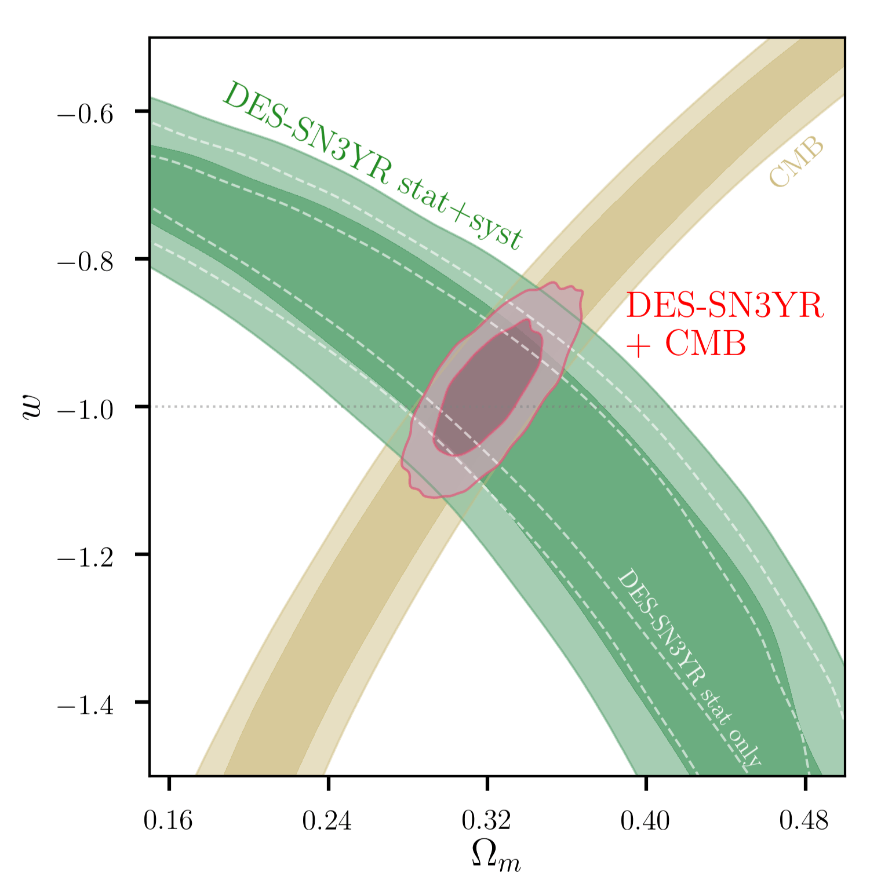
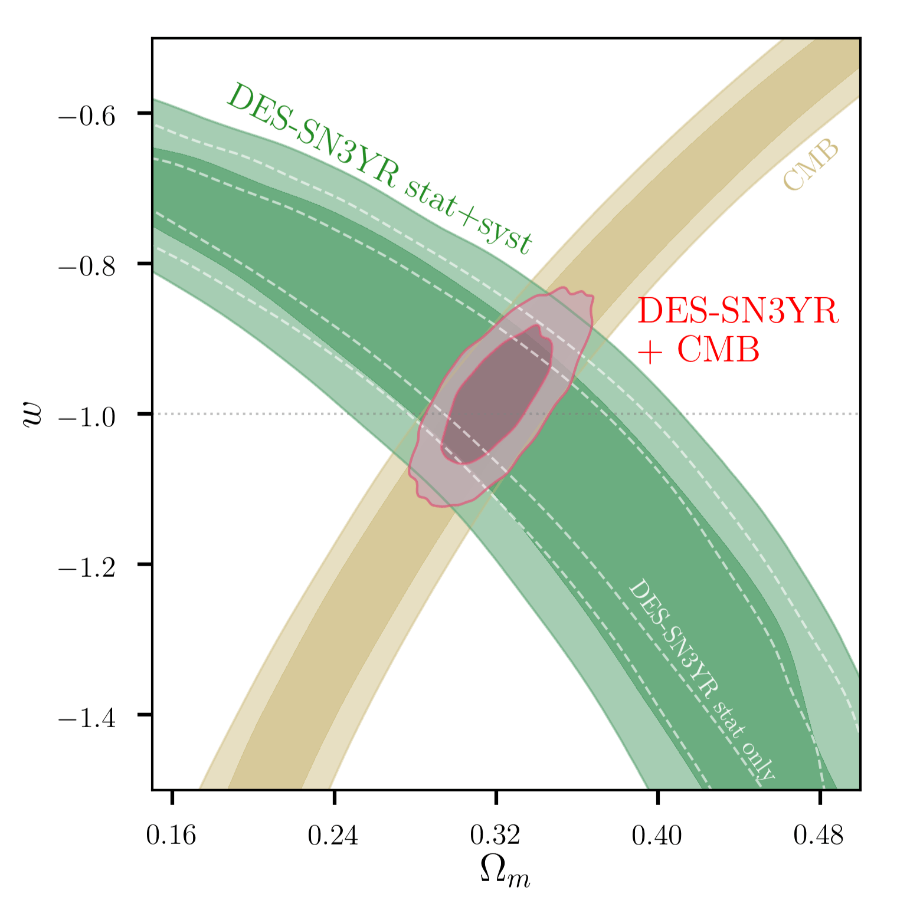

6 更多宇宙学探针
6.1 弱引力透镜
星系发出的光线受到前景物质引力势的影响会发生偏折， 导致观测到的星系在大小、形状及亮度上发生改变，这种现象称为引力透镜效应。 引力透镜效应又分为强引力透镜、弱引力透镜、微引力透镜。 强引力透镜通过测量time delay可以用来限制哈勃参数(Suyu et al., n.d.)； 微引力透镜可以用作系外行星的搜寻(Gaudi, n.d.)； 与大尺度结构最相关的是弱引力透镜。 对\(z\sim 1\)处的星系，弱引力透镜造成的形变量约为\(\sim 1\%\)。
若星系原始图像为\((x_0, y_0)\)，经引力透镜作用后变为\((x_l, y_l)\)，则二者的关系可用如下公式描述： \[\begin{pmatrix} x_0 \\ y_0 \end{pmatrix} = \begin{pmatrix} 1-\gamma_1-\kappa & -\gamma_2\\ -\gamma_2 & 1+\gamma_1-\kappa \end{pmatrix} \begin{pmatrix} x_l\\ y_l \end{pmatrix}\ , \tag{6.1}\] 其中，\(\gamma_{1, 2}\)描述星系的剪切形变（shear）。 \(\kappa\)描述星系大小及亮度的改变，称为会聚（convergence）。 引入约化的剪切形变（reduced shear）\(g_{1, 2}\)，其中，\(g_i=\gamma_i/(1-\kappa)\)。 则公式(6.1)可以写为 \[\begin{pmatrix} x_u \\ y_u \end{pmatrix} =(1-\kappa) \begin{pmatrix} 1-g_1 & -g_2\\ -g_2 & 1+g_1 \end{pmatrix} \begin{pmatrix} x_l\\ y_l \end{pmatrix}\ .\]
剪切形变会使星系的椭圆率发生改变，椭圆率与星系投影的二阶矩\(Q_{ij}\)有关。 设星系的轮廓为\(I({\bf x})\)，则二阶矩为 \[Q_{ij}=\frac{\int \rm{d}^2 x I({\bf x})W({\bf x})x_i x_j}{\int \rm{d}^2 x I({\bf x})W({\bf x})}\ ,\] 其中，\(i, j\)的取值分别为1或2，\(x_{1, 2}\)对应投影面中两个正交方向，\(W({\bf x})\)为权重函数。 椭圆率为 \[e=e_1 + ie_2 = \frac{Q_{11}-Q_{22}+2iQ_{12}}{Q_{11}+Q_{22}}\ .\] 弱引力透镜对椭圆率的改变远远小于星系的内禀椭圆率。 若假设内禀椭圆率的取向完全随机，那么对大量星系取系综平均， 其内禀椭圆率会相互抵消，从而可以得到约化的剪切形变\(g_{1,2}\)。
同密度场一样，可以定义剪切场的关联函数 \[\hat{\xi}_\pm(\theta) = \langle \hat{g}_+\hat{g}_+\rangle(\theta) \pm \langle \hat{g}_\times \hat{g}_\times\rangle(\theta)\ ,\] 其中，\(|\theta|\)为星系对在天球上投影的角间距。 \(\hat{g}_+\)与\(\hat{g}_\times\)为相对剪切形变，是\(\hat{g}\)分别在星系对连线方向，及\(\pi/4\)方向上的投影。 由于对称性，\(\langle \hat{g}_+\hat{g}_\times\rangle=0\)。 剪切场关联函数的理论值由会聚场功率谱的汉克尔变换决定： \[\xi_\pm(\theta)=\int\frac{\ell\rm{d} \ell}{2\pi}J_{0/4}(\ell \theta) [P^E_\kappa(\ell)\pm P^B_\kappa(\ell)]\ .\] 上标E，B分别代表功率谱中的无旋分量及有旋分量。 理论上透镜在一阶近似下只产生E模， 但是一些系统误差会引起不可忽略的B模信号，如点扩散函数(Point spread function，PSF)、 测量误差、以及星系内禀取向(Intrinsic Alignment，IA)。 若测量结果中存在B模成分，则可以判定存在系统误差。 但反之并非所有系统误差都会产生B模信号，因此不能因为B模信号不存在而判断没有系统误差。
Figure 6.1: Constraints on S8 (Asgari et al., n.d.).
在平直宇宙中，对于天空中某视线方向\(\hat{\theta}\)，会聚效应为 \[\kappa(\hat{\theta})=\frac{3H_0^2\Omega_m}{2c^2}\int_0^\chi \frac{\rm{d} \chi \chi q(\chi)}{a(\chi)}\delta(\chi\hat{\theta})\ ,\] 其中，\(c\)为光速，\(\chi\)为共动距离。 定义透镜效率函数为 \[q(\chi)=\int_\chi^\infty \rm{d} \chi' n(\chi')\frac{\chi'-\chi}{\chi'}\ .\] 其中，\(n\)为星系数密度。因此，会聚场的功率谱由物质功率谱决定。
弱引力透镜直接响应前景物质的分布，因此对\(\Omega_{\rm m}\)与\(\sigma_8\)两个宇宙学参数最为敏感 (关于\(\sigma_8\)的定义参见§2.1脚注。)。 实际观测中，常将二者归纳为一个参数\(S_8\equiv \sigma_8 (\Omega_{\rm m}/0.3)^{\gamma}\)， 其中，\(\gamma\)常取\(0.5\)，也可作为自由参数。 图6.1展示了不同观测项目利用引力透镜对\(S_8\)的限制结果(van Uitert et al., n.d.)。
6.2 Ia型超新星
白矮星吸积伴星或大质量恒星塌缩，都有可能导致内核温度急剧升高，产生爆炸，从而形成超新星。 超新星根据其光谱中的吸收线特征分为I类(无H线)及II类(有H线)。 I类超新星又根据其有无电离硅分为Ia型(有Si II线)与Ib型(无Si II线)。 Ia型超新星峰值亮度的弥散在经过修正后可以降低到\(\sim 0.1-0.2\)，因此常被用作”标准烛光”。 (Perlmutter et al., n.d.; Riess et al., n.d.)通过对超新星的观测，发现了宇宙加速膨胀的直接证据，并因此斩获2011年诺贝尔物理学奖。
超新星宇宙学通过测量光度距离\(d_L(z)\)限制宇宙学。通常使用对数距离 \[\mu = 5\log d_L + 25 = m_f - M_f\] 其中，\(m_f\)为视星等，\(M_f\)为绝对星等，下标\(f\)表示两者是同一静止参考系\(f\)下的测量值。 在实际观测中，对数距离可以由改进的Tripp拟合公式(Tripp, n.d.)给出： \[\mu = m_B+\alpha x_1 -\beta \mathscr{C} + M_0 +\gamma G_{\rm host} + \Delta \mu_{bias}\ .\] 其中，\(m_B\equiv -2.5\log(x_0)\)。通过拟合光变曲线[^18]， 可以得到振幅\(x_0\)，光变曲线宽度\(x_1\)，以及颜色\(\mathscr{C}\)。 \(G_{\rm host}\)依赖于宿主星系的恒星质量\(M_{\rm host}\)， 若\(M_{\rm host}>10^{10}M_\odot\)，则\(G_{\rm host}=+1/2\)， 若\(M_{\rm host}<10^{10}M_\odot\)，则\(G_{\rm host}=-1/2\)。 \(\alpha, \beta, \gamma\)和\(M_0\)为拟合参数。 \(\alpha, \beta, \gamma\)分别描述超新星亮度与光变曲线宽度，颜色，宿主星系恒星质量的关系， \(M_0\)则与绝对星等和哈勃常数有关。 \(\Delta \mu_{b}\)描述选择效应产生的偏袒，可以通过数值模拟确定。
![Constraints on cosmological parameter from DES-SN3YR samples [@Abbott2019].](intro/UNBLIND_plot_omol_.png) 

Figure 6.2: Constraints on cosmological parameter from DES-SN3YR samples (T. M. C. Abbott et al., n.d.).
图6.2展示了DES-SN3YR数据(暗能量巡天DES超新星样本 + low-z样本)对两种宇宙学的限制。 左侧为\(\Lambda\)CDM模型，在平直宇宙假设下，\(\Omega_{\rm m}=0.331\pm 0.038\)，\(\Omega_{\Lambda}=0.669\pm 0.038\)； 结合Planck微波背景辐射与SDSS重子声波振荡数据后的限制为\(\Omega_{\rm m}=0.308\pm 0.007\)，\(\Omega_{\Lambda}=0.690\pm 0.008\)。 右侧为平直宇宙的\(w\)CDM模型，在结合Planck微波背景辐射与SDSS重子声波振荡数据后的限制为，\(\Omega_{\rm m}=0.311\pm 0.009\)，\(w=−0.977\pm 0.047\)， 结果与\(\Lambda\)CDM模型一致。 目前超新星宇宙学的系统误差主要来自于尘埃消光、超新星颜色和光度的修正等。
6.3 引力波
6.3.1 标准汽笛
高频引力波的种类大致可以分为三种： (1) 致密双星/双黑洞/致密星-黑洞系统绕转/并合产生的引力波。 (2) 单个致密天体如中子星，由于不是完美的球体，在自旋时会产生连续的引力波信号。 (3) 一直存在于背景中的各种随机引力波。 LIGO等探测项目主要针对的是第一种引力波，其性质主要由三个参数描述，绕转频率\(f\)、频率随时间的变化率\(\dot{f}\)、以及引力波振幅。 通过这三个参数可以计算系统中致密星或黑洞的质量，确定其光度距离，从而测量哈勃常数(Schutz, n.d.)，因此也被称为”标准汽笛”。 2017年，B. P. Abbott, Abbott, Abbott, Acernese, et al. (n.d.) 第一次利用引力波数据给出了哈勃常数的限制，得到的结果为\(H_0=70^{+12.0}_{-8.0} {\rm km/s/Mpc}\)。
6.3.2 原初引力波
暗物质与暗能量的起源需要追溯到CMB之前，理论上可以探测更早期宇宙的手段有中微子背景辐射与原初引力波。 不同于上文中提到的LIGO所能探测到的由双星或黑洞并合产生的引力波，原初引力波是暴涨过程中的张量扰动引起的。 由于原初引力波信号十分微弱，想要直接对其进行探测几乎无法实现。 幸运的是，原初引力波会在CMB图像上产生B模偏振。 因此，通过探测CMB的B模偏振，我们可以直接检验暴涨理论。
Figure 6.3: Published B-modes power spectra as of March 2018 (The BICEP/Keck Collaboration et al., n.d.). Red solid line is the lensing signal. The two red dashed lines correspond the GW signals for r=0.05 and r=0.01. Data points with errorbars are the measurements from various telescopes.
图6.3展示了暴涨理论预言的极化功率谱以及目前观测给出的结果。 红色实线为引力透镜引起的B模信号，其峰值约位于\(\ell\sim 1000\)。 引力波引起的B模信号为红色虚线，其峰值约位于\(\ell \sim 80\)。 因此，要测量到原初B模信号，需要在较大张角持续观测，不断提升信噪比。 设立在南极的BICEP/KECK项目(Ahmed et al., n.d.; BICEP2 Collaboration et al., n.d.; The BICEP/Keck Collaboration et al., n.d.)， 智利的PolarBear望远镜(Polarbear Collaboration et al., n.d.; POLARBEAR Collaboration et al., n.d.; Suzuki et al., n.d.)， 太空项目LiteBIRD(Hazumi et al., n.d.; Montier et al., n.d.)， 以及中国的Ali-CPT(Li et al., n.d.; Salatino et al., n.d.)等，都试图在CMB的极化谱中寻找原初B模信号。